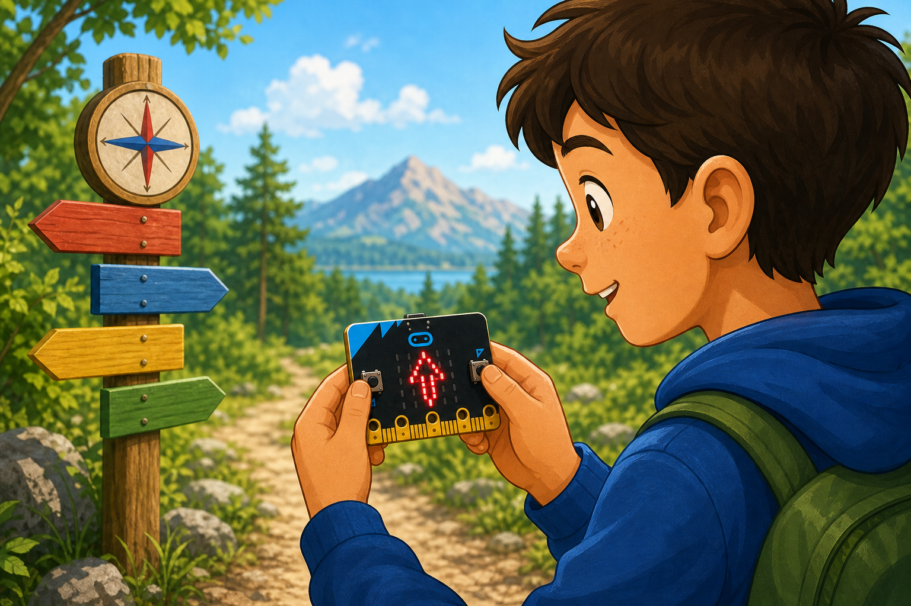
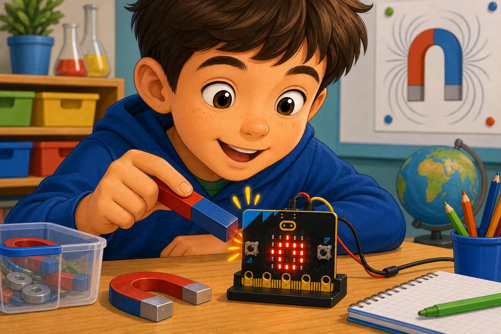

Digital compass
DetectThe compass heading
→
DecideWhich way is north
→
DoPoint an arrow north
The magnetometer measures magnetic fields, which lets the micro:bit work as a compass.
It can tell you the heading in degrees, where 0 means north.
It also senses strong magnets that are held nearby.


from microbit import *
compass.calibrate()
while True:
heading = compass.heading()
display.scroll(heading)basic.forever(function () {
let heading = input.compassHeading()
basic.showNumber(heading)
})compass.calibrate() first and tilt the micro:bit to fill the screen. compass.heading() returns 0 to 359 degrees.